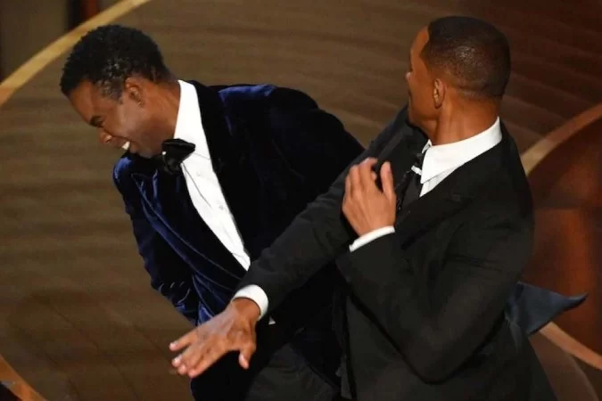
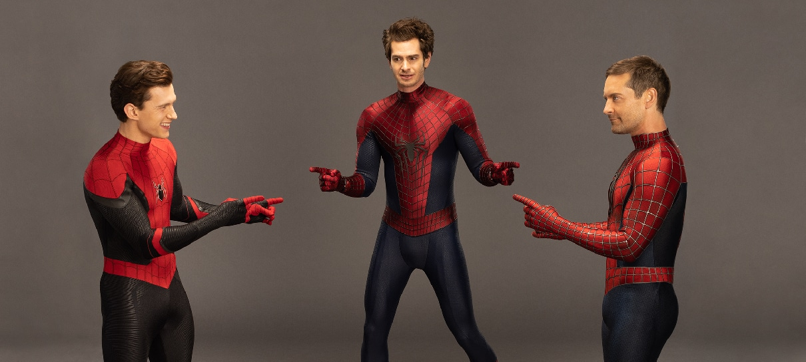

Tubarão com feições humanas encontrado na Indonésia é comparado com Zé Gotinha.

O melhor crossover do ano! "Um Maluco odeia o Chris"

O meme é Real!!!
Skatista! Virgil levava uma vida normal até ganhar seus poderes e, como todo adolescente de Dakota, andava pela cidade em seu skate. Quando se tornou o Super Choque, ele precisava de um meio de transporte que permitisse chegar aos locais mais distantes
de forma rápida, mas com estilo. Virgil começou surfando em tampas de bueiro ou qualquer outra coisa feita de metal. Até que acabou projetando um disco que se tornou sua marca registrada.